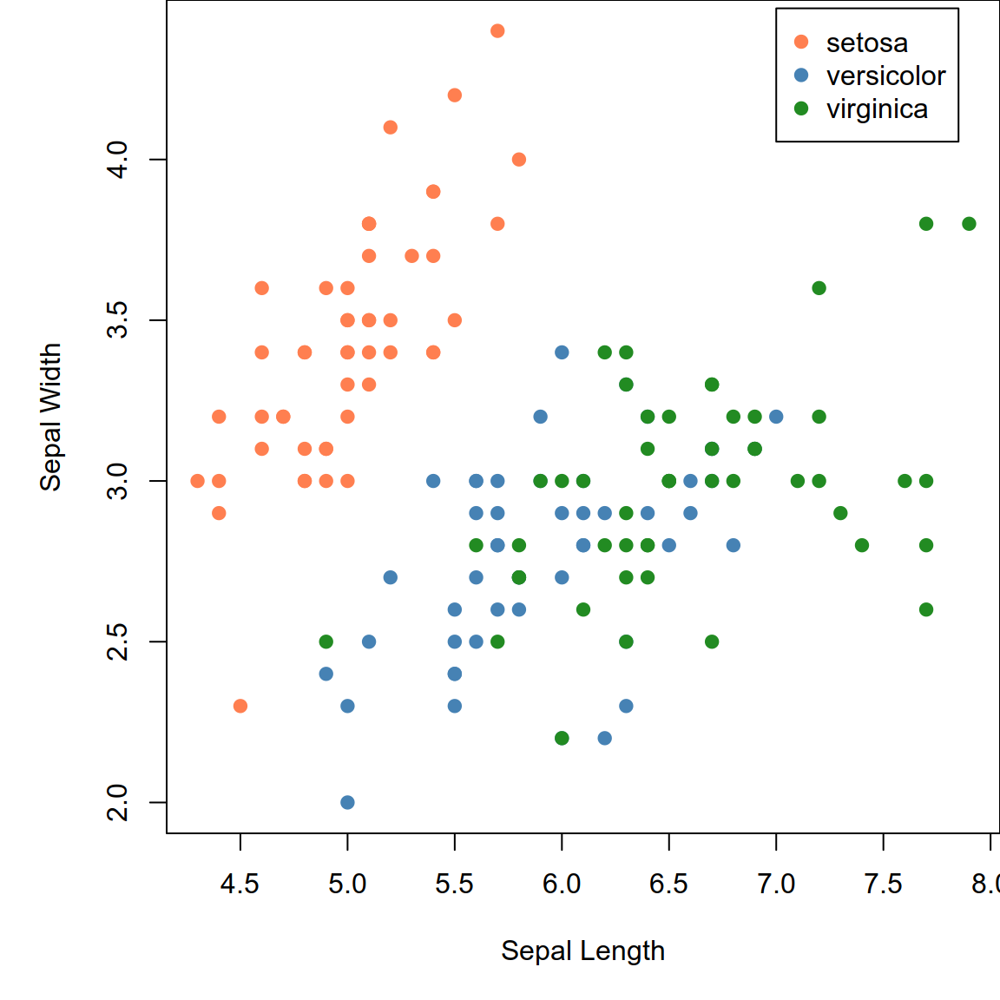

Demo Slides
RaukR 2023 • Advanced R for Bioinformatics
30-Apr-2023
Introduction
RMarkdown
- This is a quarto presentation using RMarkdown.
- In RStudio, create a
.qmdtext file. - Add YAML matter to the top if not already there.
---
title: "This is a title"
format:
revealjs
---- Click the Render button for a rendered preview.
- Or use
quarto::quarto_render()in R:
- Or use
quarto renderin the terminal:
Slides
Slide separators
Slides are separated by ##. Incremental content on same slide is separated by . . . like below.
Hide or not count a slide:
## Slide Title {visibility="hidden"}
## Slide Title {visibility="uncounted"}. . .
Slide notes
Any content inside class .notes on a slide are notes. This is only visible in presenter mode (by pressing s).
. . .
Keyboard shortcuts
- Press f for full-screen view.
- Press o for overview.
- Press s for speaker view.
- Press ? for help.
Layout
The slide content can be organized into columns which can be nested if needed.
:::{.columns}
:::{.column width="50%"}
<div style="background-color:#fdebd0">Left content</div>
:::
:::{.column width="50%"}
<div style="background-color:#eaf2f8">Right content</div>
:::{.column width="60%"}
<div style="background-color:#d0ece7">Inner left</div>
:::
:::{.column width="40%"}
<div style="background-color:#f2d7d5">Inner right</div>
:::
:::
:::Left content
Right content
Inner left
Inner right
Panel tabs
Text Formatting
Rendering of normal text, numbers and symbols.
ABCDEFGHIJKLMNOPQRSTUYWXYZÅÄÖ
abcdefghijklmnopqrstuvwxyzåäö
0123456789
!“#%&/()$@*^~<>-:;,_±|?+=
!"#%&/\()$@*^~<>-:;,_±|?+=
Text formatting
Headings can be defined as shown below.
## Level 2 heading
### Level 3 heading
#### Level 4 heading
##### Level 5 heading
###### Level 6 headingLevel 3 heading
Level 4 heading
Level 5 heading
Level 6 heading
Level 1 usage is not recommended. Use level 2 for slide titles. Use level 3 and below for other titles.
Text scaling classes
[Largest text]{.largest}
[Larger text]{.larger}
[Large text]{.large}
Normal text.
[Small text]{.small}
[Smaller text]{.smaller}
[Smallest text]{.smallest}Largest text
Larger text
Large text
Normal text
Small text
Smaller text
Smallest text
Text Formatting
Horizontal alignment of text can be adjusted as shown below.
[Left aligned text]{.left}
[Center aligned text]{.center}
[Right aligned text]{.right}Left aligned text
Center aligned text
Right aligned text
::: {.blockquote}
This line is quoted
:::This line is quoted
A horizontal line can be created using ---
This is **Bold text** This is Bold text
This is *Italic text* This is Italic text
~~Strikethrough~~ text
Strikethrough text
This is Subscript H<sub>2</sub>O
H2O
This is Superscript 2<sup>10</sup>
210
[Highlighted text]{.highlight}
Highlighted text
This is a [link](r-project.org)
This is a link
Text formatting
Fit text to full width.
::: {.r-fit-text}
Attention
:::Attention
Text formatting
Content here
::: {.aside}
This content is in here.
:::More content here
Tip
In reports, aside pushes content right into the margin while, in revealjs presentation, it is pushed to the bottom left.
Lists
Bulleted List
- Bullet 1
- Bullet 2
- Sub-bullet 2.1- Bullet 1
- Bullet 2
- Sub-bullet 2.1
Incremental Bullets
:::{.incremental}
- Incremental Bullet 1
- Incremental Bullet 2
- Incremental Bullet 3
:::- Incremental Bullet 1
- Incremental Bullet 2
- Incremental Bullet 3
For more options, see here.
Custom CSS styling
- You can style text using any custom CSS
- This is a block level element
::: {style="color: red"}
This paragraph is red.
:::This paragraph is red.
- This is a span. ie; A word or one line.
[This text is red]{style="color: red"}
This text is red
Call-Outs
::: {.callout-note}
This is a call-out.
:::
::: {.callout-warning}
This is a call-out.
:::
::: {.callout-important}
This is a call-out.
:::
::: {.callout-tip}
This is a call-out.
:::
::: {.callout-caution}
This is a call-out.
:::Note
This is a call-out.
Warning
This is a call-out.
Important
This is a call-out.
Tip
This is a call-out.
Caution
This is a call-out.
Code formatting
Inline code
- Code can be defined inline where
`this`looks likethis. - R code can be executed inline
`r Sys.Date()`producing 2023-05-23.
Ligatures
== != && ++ |> <> <- <= <~ /= |=> ->>
== != && ++ |> <> <- <= <~ /= |=> ->>
Code font used is JetBrains Mono. For full set of ligatures, see here.
Code formatting
Code chunks
Code can also be defined inside chunks.
```
This is code
```This is codeR code is executed inside code blocks like this
which shows the code and output.
Code highlighting
For more code highlighting documentation, see here.
Images • Markdown
Using Markdown
Using regular markdown.

The dimensions are based on image and/or fill up the entire width.
Control image dimensions.
{width=50%}
{width=10%}
For more image documentation, see here.
Images • Markdown • Layout
Figure layout.
::: {layout-ncol=2}
{#subfig1 width="40%"}
{#subfig2 width="40%"}
:::
Images • HTML
Using Raw HTML
This image is 30% size. <img src="assets/featured.jpg" style="width:30%;"/>
Images • R
Using R
R chunks in RMarkdown can be used to control image display size using the arguemnt out.width.
This image is displayed at a size of 200 pixels.
This image is displayed at a size of 75 pixels.
Math expressions
Some examples of rendering equations.
\(e^{i\pi} + 1 = 0\) \[\frac{E \times X^2 \prod I}{2+7} = 432\] \[\sum_{i=1}^n X_i\] \[\int_0^{2\pi} \sin x~dx\]
\(\left( \sum_{i=1}^{n}{i} \right)^2 = \left( \frac{n(n-1)}{2}\right)^2 = \frac{n^2(n-1)^2}{4}\) \(\begin{eqnarray} X & \sim & \mathrm{N}(0,1)\\ Y & \sim & \chi^2_{n-p}\\ R & \equiv & X/Y \sim t_{n-p} \end{eqnarray}\) ]
\(\begin{eqnarray} P(|X-\mu| > k) & = & P(|X-\mu|^2 > k^2)\\ & \leq & \frac{\mathbb{E}\left[|X-\mu|^2\right]}{k^2}\\ & \leq & \frac{\mathrm{Var}[X]}{k^2} \end{eqnarray}\)
Tables • kable
The most simple table using kable from R package knitr.
Tables • kableExtra
More advanced table using kableExtra and formattable.
iris[c(1:2,51:52,105:106),] %>%
mutate(Sepal.Length=color_bar("lightsteelblue")(Sepal.Length)) %>%
mutate(Sepal.Width=color_tile("white","orange")(Sepal.Width)) %>%
mutate(Species=cell_spec(Species,"html",color="white",bold=T,
background=c("#8dd3c7","#fb8072","#bebada")[factor(.$Species)])) %>%
kable("html",escape=F) %>%
kable_styling(bootstrap_options=c("striped","hover","responsive"),
full_width=F,position="left") %>%
column_spec(5,width="3cm")| Sepal.Length | Sepal.Width | Petal.Length | Petal.Width | Species | |
|---|---|---|---|---|---|
| 1 | 5.1 | 3.5 | 1.4 | 0.2 | setosa |
| 2 | 4.9 | 3.0 | 1.4 | 0.2 | setosa |
| 51 | 7.0 | 3.2 | 4.7 | 1.4 | versicolor |
| 52 | 6.4 | 3.2 | 4.5 | 1.5 | versicolor |
| 105 | 6.5 | 3.0 | 5.8 | 2.2 | virginica |
| 106 | 7.6 | 3.0 | 6.6 | 2.1 | virginica |
Tables • DT
Interactive table using R package DT.
Static plots • Base Plot
Plots using base R.
Static plots • ggplot2
Plotting using ggplot2.
Interactive plots • rbokeh
R package rbokeh is an easy and convenient option to get started with interactive plots.
Interactive plots • highcharter
R package highcharter is a wrapper around javascript library highcharts.
library(highcharter)
h <- iris %>%
hchart("scatter",hcaes(x="Sepal.Length",y="Sepal.Width",group="Species")) %>%
hc_xAxis(title=list(text="Sepal Length"),crosshair=TRUE) %>%
hc_yAxis(title=list(text="Sepal Width"),crosshair=TRUE) %>%
hc_chart(zoomType="xy",inverted=FALSE) %>%
hc_legend(verticalAlign="top",align="right") %>% hc_size(height=300,width=500)
htmltools::tagList(list(h))Interactive plots • plotly
R package plotly provides R binding around javascript plotting library plotly.
Interactive plots • ggplotly
plotly also has a function called ggplotly which converts a static ggplot2 object into an interactive plot.
Interactive plots • ggiraph
R package ggiraph converts a static ggplot2 object into an interactive plot.
library(ggiraph)
p <- ggplot(iris,aes(x=Sepal.Length,y=Petal.Length,colour=Species))+
geom_point_interactive(aes(tooltip=paste0("<b>Petal Length:</b> ",Petal.Length,"\n<b>Sepal Length: </b>",Sepal.Length,"\n<b>Species: </b>",Species)),size=2)+
theme_bw()
tooltip_css <- "background-color:#f8f9f9;padding:10px;border-style:solid;border-width:2px;border-color:#125687;border-radius:5px;"
ggiraph(code=print(p),hover_css="cursor:pointer;stroke:black;fill-opacity:0.3",zoom_max=5,tooltip_extra_css=tooltip_css,tooltip_opacity=0.9,height_svg=2,width_svg=4,width=0.6)Interactive time series • dygraphs
R package dygraphs provides R bindings for javascript library dygraphs for time series data.
Network graph
R package networkD3 allows the use of interactive network graphs from the D3.js javascript library.
Interactive maps • leaflet
R package leaflet provides R bindings for javascript mapping library; leafletjs.
Linking Plots • crosstalk
R package crosstalk allows crosstalk enabled plotting libraries to be linked. Through the shared ‘key’ variable, data points can be manipulated simultaneously on two independent plots.
library(crosstalk)
shared_quakes <- SharedData$new(quakes[sample(nrow(quakes), 100),])
lf <- leaflet(shared_quakes,height=300) %>%
addTiles(urlTemplate='http://{s}.tile.openstreetmap.org/{z}/{x}/{y}.png') %>%
addMarkers()
py <- plot_ly(shared_quakes,x=~depth,y=~mag,size=~stations,height=300) %>%
add_markers()
div(div(lf,style="float:left;width:49%"),div(py,style="float:right;width:49%"))ObservableJS
- Quarto supports ObservableJS for interactive visualisations in the browser.
ObservableJS
ObservableJS in quarto documentation.
Diagrams
Colourful
This slide has a colourful background
## Colourful {background-color="#ABEBC6"}Big Image
This slide has a background image
## Big Image {background-image="assets/featured.jpg"}General tips
- Replace assets/cover.jpg to change cover slide picture
- Replace assets/end.jpg to change end slide picture
- Add custom css under YAML
css: "styles.css" - If content overflows the slide in vertical direction, add class
.scrollable
sysname
"Linux"
release
"5.15.0-72-generic"
version
"#79~20.04.1-Ubuntu SMP Thu Apr 20 22:12:07 UTC 2023"
nodename
"zorin"
machine
"x86_64"
login
"roy"
user
"roy"
effective_user
"roy" - Export HTML to PDF using PDF export mode by pressing e
- For complete Quarto revealjs documentation, click here
Thank you! Questions?
_
platform x86_64-conda-linux-gnu
os linux-gnu
major 4
minor 2.2 Graphics from freepik, Pexels
2023 • SciLifeLab • NBIS • RaukR